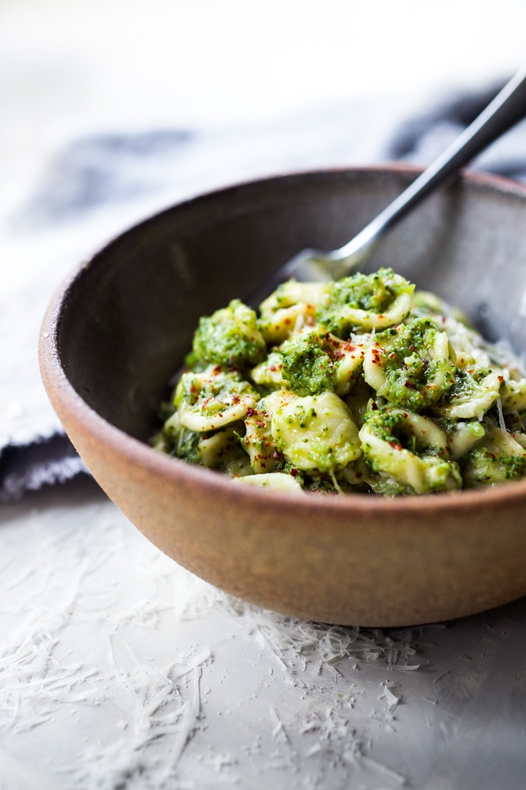

Broccoli Pasta

Description
A simple and easy pasta recipe that's really good on weeknights.
Ingredients
- Salt
- 900g broccoli florets and peeled stems
- Extra-virgin olive oil
- 1 large yellow onion, finely diced
- 1 to 2 teaspoons red pepper flakes
- 3 garlic cloves, minced
- 1 pound orecchiette, penne, linguine, bucatini, or spaghetti
- 1 /2 cup Sprinkling Crumbs
- Freshly grated Parmesan, for serving
Steps
- Set a large pot of water over high heat. When it comes to a boil, season it generously with salt until it tastes like the summer sea.
- Cut the broccoli florets into 1 /2 -inch pieces, and stems into 1 /4 - inch slices.
- Set a large Dutch oven or similar pot over medium-high heat. Once it’s hot, add just enough olive oil to coat the bottom of the pot. When the oil shimmers, add the onions, a generous pinch of salt, and 1 teaspoon pepper flakes. As soon as the onions begin to brown, give them a stir and reduce the flame to medium. Stirring occasionally, cook the onions until they are tender and golden brown, about 15 minutes. Move the onions to the edge of the pot, clearing a spot in the center. Add a tablespoon or so of olive oil, and then the garlic. Cook gently until the garlic starts to give off an aroma, about 20 seconds. Before the garlic begins to take on any color, stir it into the onions and reduce the heat to low to keep the garlic from browning.
- Drop the broccoli into the boiling water and cook until tender, about 4 to 5 minutes. Remove the pieces from the pot with a spider or slotted spoon and add them directly to the pan of onions. Cover the pot of water to prevent evaporation and leave it boiling on the stove for cooking the pasta. Increase the heat to medium, and continue to cook, stirring occasionally, until the broccoli begins to break down and combines with the onions and olive oil into a sauce, about 20 minutes. If the mixture appears dry, rather than saucy, add a spoonful or two of the cooking water to moisten it.
- Add the pasta to the water and give it a stir. As it cooks, continue cooking and stirring the broccoli. The key is to make sure there’s enough water in the pan so the broccoli, oil, and water emulsify and become saucy and sweet. Keep cooking, and stirring, and add water as needed.
- When the pasta is al dente, drain it, reserving two cups of the cooking water. Toss the hot noodles into the pan with the broccoli, and stir. Add another, final splash of olive oil and the salty pasta water to ensure the noodles are all well coated, moist, and seasoned. Taste and adjust the salt and pepper flakes as needed.
Serve immediately, topped with bread crumbs and generous amounts of snowy grated Parmesan.